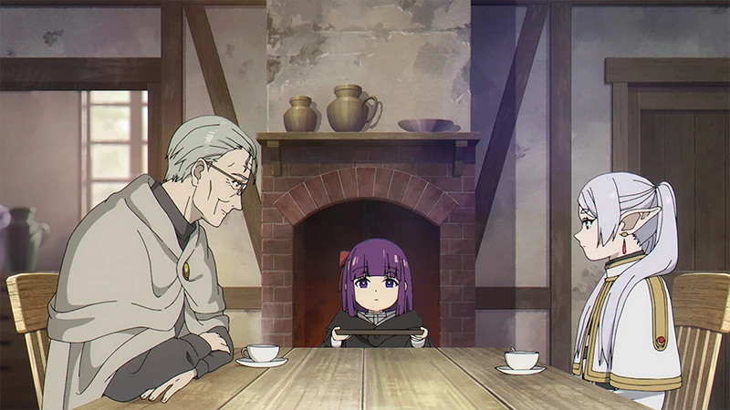
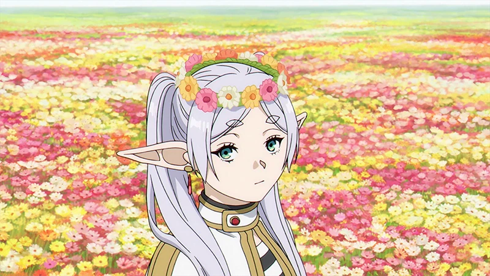
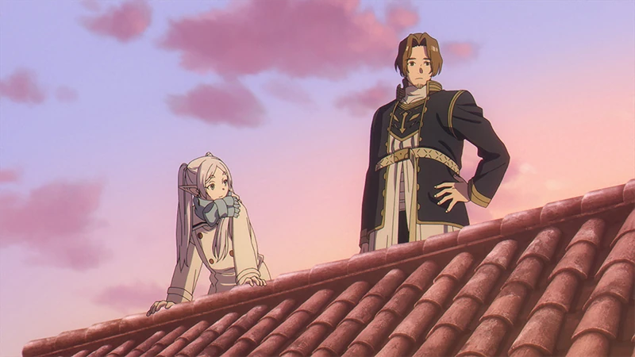

芙莉莲是寿命超过千年的精灵魔法使。对她而言，几十年短得像一个季节。
BEYOND JOURNEY'S END
旅途之后
对她而言，那只是短暂的十年。
可在很久以后，她才开始明白那段旅途。
SCROLL TO REMEMBER
00BEFORE THE JOURNEY4 THINGS TO KNOW
没看过《芙莉莲》也没关系
这是一个发生在
冒险结束之后的故事。
她与人类勇者辛美尔和伙伴们旅行十年，打败魔王，然后告别。
五十年后再次相见，辛美尔已经老去。直到他的葬礼，她才发现自己从未真正了解他。
展开人物关系与故事背景
F
芙莉莲近乎不变的精灵 / 开始学习理解人类
H
辛美尔生命短暂的勇者 / 在回忆里持续影响她
F · S
菲伦与修塔尔克新的同行者 / 让她重新走过旧日道路
她再次出发，不是为了打败谁，
而是为了弄懂那些曾被自己忽略的心意。
01THE TEN YEARS10 / 1000
十年 / 对精灵而言，像一个短暂季节
他们一起走过
短暂的十年
精灵的一生漫长得足以让王国成为遗迹
勇者一行的旅途只有十年，却被记住了一千年
讨伐结束以后，四个人在王都告别。有人把十年当作一生最重要的旅途，有人却以为下一次见面依旧不会太晚。


那时的四个人，还不知道告别会有多长。
02THE PROMISED METEORS50 YEARS LATER
五十年 / 同一场流星雨
她如约回来，
时间却没有停下。
天空仍像从前一样明亮。曾经年轻的同伴已经老去，而她几乎没有改变。承诺被兑现的那一夜，也成为最后一次同行。


50 YEARS LATER同一场流星雨，照见了完全不同的时间。
03A QUESTION TOO LATEWHY?

葬礼 / 第一次无法理解自己的眼泪
明明知道生命短暂，
为什么没有试着了解？
她记得战斗与魔法，却想不起那个人喜欢什么、害怕什么，又为何一次次露出温柔的笑。漫长生命里，一个迟来的疑问成为新的起点。
有些离别不是故事的结尾，
而是理解终于开始的地方。

04A NEW PARTYNORTHWARD
再次出发 / 新的脚步走过旧的道路
为了理解已经离开的人，她带着新的同伴，再次走上曾经的道路。
这一次，
她开始认真记住。



菲伦与修塔尔克加入后，旧道路有了新的走法。
相似的道路再次出现，却不再是同一段旅途。新的同伴会争吵、停留、庆祝生日，也会提醒她：所谓了解，往往藏在没有被写进史诗的日常里。
05MINOR MEMORIESHOLD TO REVEAL
被留下的小事 / 拖动记忆带
宏大的冒险会被记载，
小事却更像一个人。

01花田
一个曾被称赞过的魔法，很多年后依然开花。
 02
02戒指
当时没有听懂的含义，后来在时间里慢慢显现。
 03
03铜像
不是为了被歌颂，只是不想让同行的证明消失。

04黄昏
值得记住的，常常只是一起看过的普通景色。
 05
05宝箱
知道可能是陷阱，仍愿意相信那一点点可能。
01/ 05
06TO THE NORTHAUREOLE

向北方 / 为了一场迟到了很久的对话
旅途的终点，
不是胜利。
他们向传说中灵魂安眠的地方前进。路很长，长到足以重新经过旧日，也足以让一句没能说出口的话，终于找到抵达的方向。
DESTINATION魂眠之地距离仍在更新
07A NOTE FOR A SHORT LIFEYOUR MEMORY
写给短暂生命的信
如果很多年后回头，
你希望记住什么？
MEMORY / 000
一段尚未写下的记忆。